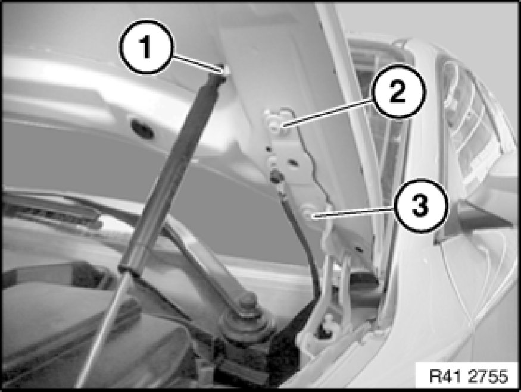

Removing and Installing Hood/Bonnet
41 61 000 - Removing and installing hood/bonnet

Read contents of Body, General Service Precautions.
For stripping and rigging operations, refer to texts on KSD CD (FR number 41 61 000).
Necessary preliminary tasks:
- Disconnect all cable plug connections

Important!
For the following work step, secure the engine hood against falling closed.
Disconnect gas-pressure damper from engine hood (1).
Loosen screws (2).
Release screws (3).
Tightening torque 41 61 1AZ [1][2]41 61 Engine Compartment Lid.
Note:
This work step must be carried out with a second person assisting.
Remove hood lid.
Installation:
Install engine hood at screw locations to on hinge. This dispenses with the need for adjustment after installation.
If this is not possible, adjust engine hood Adjustments.